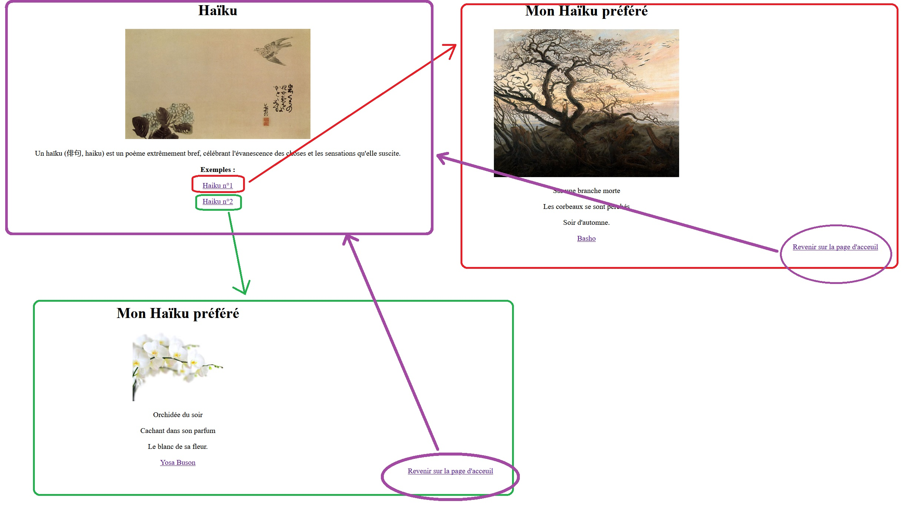

Synthèse
Le but est de réaliser une liaison entre chaque pages HTML réalisées :
On souhaite avoir a une page d'accueil ( avec la définition d'un Haiku ), puis en cliquant sur Haiku n°1 on a le premier Haiku et en cliquant sur le second on arrive sur la page n°2 de l'exercice précédent, pour chaque page on mettra un lien permettant de revenir à la page d'accueil comme ci dessous :

Pour cela on créera des liens hypertextes grâce à l'url de chaque pages.
On aura trois pages HTML :
index.html : page d'accueil
haikui1.html : page de haiku n°1
haiku2.html : page de haiku n°2
La balise est la suivante : <a href=" à compléter selon la situation "</a>
Les différents liens relatifs :
Créé avec HelpNDoc Personal Edition: Générateur complet d'aides multi-formats